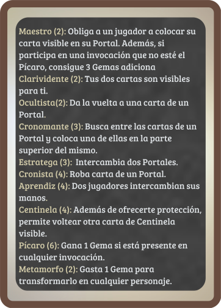
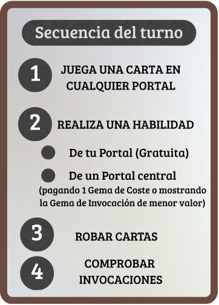

Un juego diseñado por @elmeepleazul


O configura abajo una partida nueva (sustituirá a la guardada).
Elige para cada asiento si juega una persona (escribe su nombre) o una autómata (elige su nivel).